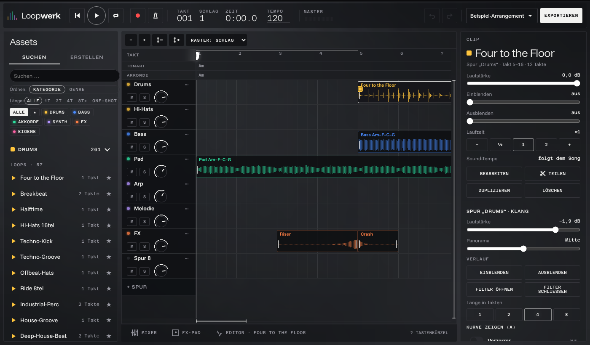
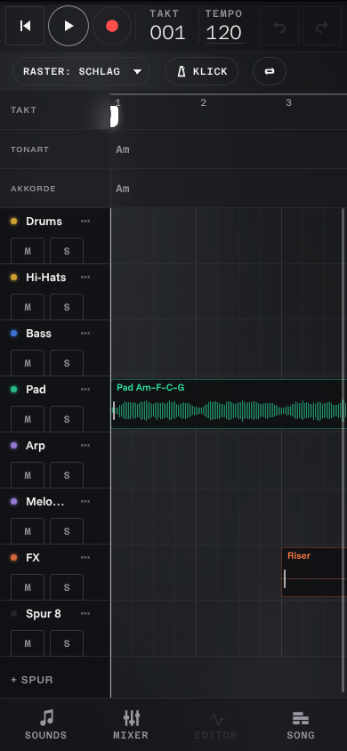
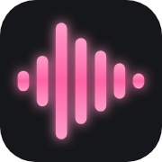

Loopwerk-artiger Song-Bau aus selbst Aufgenommenem. Gleiche Funktionen, halb so viel sichtbare Oberfläche, doppelt so viel Raum fürs Formen. Familie Phosphor: schwarz, was klingt leuchtet, Einstellungen sind Linien, aktiv ist Weißglut, Rot nur für Aufnahme und Löschen. Neu: Kategorien nach Herkunft (Körper, Dinge, Stimme, Strom, Schleife), Licht aus dem Mikrofon, Pink nur als Marke.


Es gibt nur den Song. Jedes Werkzeug erscheint an dem Ding, das du berührst, und die Werkbank ist kein Fenster, sondern der herangezoomte Clip.
--bg als Leinwand, --sheet-bg nur für das Werkzeug am Objekt, Herkunft über --cat-*, Auswahl --beam, Aufnahme --danger, Mikrofonlicht --cat-own.Arranger, spielt. Keine Spurköpfe: Name und Lichtkante liegen auf der Spur. Clip gewählt, das Werkzeug hängt am Clip. Unten die Fundstücke (frische Aufnahmen weiß und körnig = roh), dann Daumenzone: Spielen, Mikro, Rückgängig, Mehr.
Werkbank = der Clip, groß. Anfang und Ende sind Linien direkt an der Welle, Ein-/Ausblenden ist die Hüllkurve darauf. Darunter die Werkzeuge als Wörter: wischen wechselt, sechs Gruppen, je vier bis sechs Linien (insgesamt 28 Einstellungen, keine sichtbar, die du nicht gewählt hast).
Aufnahme. Der Raum wird dunkel, nur die Zielspur bleibt hell. Der neue Clip wächst als weißes Korn (roh) an der Marke. Licht steigt vom unteren Rand, wo das Mikrofon ist, und folgt dem Pegel. Rot nur am Knopf, an der Zeit und am Clipanfang; Pegelring weiß.

Krachwerk / KüchensongDesktop. Ganze Breite für die Musik. Links die Fundstücke als Liste ohne Spalte und ohne Kasten (ziehen = Clip). Das Werkzeug am gewählten Clip ist hier eine Karte mit Wörter-Reitern; ↗ zoomt in die volle Werkbank. Transport schwebt unten als einzige weitere Fläche. Mixer: Spurname anklicken öffnet dieselbe Karte für die Spur.
Oben spielt der Song, unten liegt immer der eine Klang, an dem du gerade arbeitest, und das Mikrofon sitzt genau auf der Naht dazwischen.
--bg + --head-bg, Werkbank auf --bg (keine zweite Fläche), Naht --line, Regler --key-line/--beam, Clipkante 30 % --cat wie Loopwerk.Bühne groß. Song oben wie in Loopwerk, aber ohne Tonart-/Akkordzeile und Knöpfe im Spurkopf. Die Werkbank unten zeigt immer den gewählten Clip mit drei schnellen Griffen. „Rückwärts“ ist stumm (durchgestrichen, Clip gedimmt).
Werkbank groß (Naht nach oben gezogen). Der Song spielt weiter, drei Spuren bleiben sichtbar. Fünf Reiter, je sechs Linien in zwei Spalten; die Welle trägt Schnitt und Hülle direkt. Gleiche Werkbank für eine Spur = Mixer-Kanal.
2 Takte · Takes stapeln sich
Aufnahme. Die Naht wird zur roten Aufnahmelinie, die Werkbank zeigt den eingehenden Klang roh (weißes Korn) und groß, die Bühne zeigt, wo er landet. Modus bleibt sichtbar und ist während der Aufnahme wählbar für den nächsten Durchgang.
Desktop. Die Naht steht senkrecht: links Bühne (64 %), rechts Werkbank (36 %). Mikro-Knopf auf der Naht, auf Augenhöhe mit dem gewählten Klang. Die Ablage (alle eigenen Klänge nach Herkunft) liegt in der Werkbank; ein Regal gibt es nicht mehr.
Der Song liest sich wie ein Notenblatt: Spuren sind Zeilen aus Schrift, Clips sind Licht auf der Linie, und jede Einstellung ist ein Satz, dessen Zahlen man zieht.
--bg, --ink, --muted, --line; Licht ausschließlich in der Welle (--cat-*). Auswahl = weißer Lichtstrich unter dem Clip (--beam-glow). Keine Flächen, keine Tasten mit Rahmen.90 · A-Moll · Takt 3 von 16
Partitur, spielt. Spurname in groß, Herkunft in klein daneben. Kein Kasten: die Wellen stehen auf ihrer Zeile. Clip antippen öffnet eine Zeile mit Name und vier Wörtern. „Rückwärts“ ist stumm: durchgestrichen.
Aufgenommen in der Küche am 2. November, 21:14. Take 2 von 3.
Beginnt bei 0,06 s und endet bei 0,71 s.
Klingt 3 Halbtöne höher und wird zu 80 % auf A-Moll gezogen.
Schlägt in 4 ms an und klingt in 640 ms aus.
Unter 120 Hz ist Ruhe, Rauschen ist zu 60 % weg.
Steht in einem kleinen Raum, Echo aus.
Spielt 2 dB leiser, etwas links.
Werkbank als Sätze. Jeder Wert ist ziehbar (waagrecht) oder antippbar (Liste). Eine Gruppe pro Satz statt Reiter: alles sichtbar, nichts versteckt, und trotzdem kein einziger Regler. Was auf Standard steht, fällt aus dem Satz.
90 · A-Moll · Takt 3 von 16
Aufnahme. Die Seite wird zur Anzeige: die Zeit als größte Schrift im ganzen Produkt, darunter schreibt sich die rohe Welle über die Seite bis zur Marke. Pink steigt vom Mikrofon auf, Rot bleibt auf Punkt, Wort und Knopf.
Aufgenommen in der Küche am 2. November, 21:14. Take 2 von 3.
Beginnt bei 0,06 s und endet bei 0,71 s.
Klingt 3 Halbtöne höher, zu 80 % auf A-Moll gezogen.
Schlägt in 4 ms an und klingt in 640 ms aus.
Unter 120 Hz ist Ruhe, Rauschen zu 60 % weg.
Steht in einem kleinen Raum, Echo aus.
Spielt 2 dB leiser, etwas links.
Desktop als Buchseite. Linker Rand: Titel, Zutatenliste („0 fremde Klänge“), Transport, Fundstücke als Register. Mitte: die Partitur. Rechter Rand: die Werkbank des gewählten Clips als Marginalie aus Sätzen.
B ist die einzige Richtung, die „mehr Raum fürs Selbermachen“ wörtlich baut, ohne Funktionen zu verstecken. Von A kommt das Werkzeug am Objekt (statt Inspektor-Spalte), von C die Sprache: Mono nur noch für Zahlen, Werte und Stammbaum als lesbare Sätze.